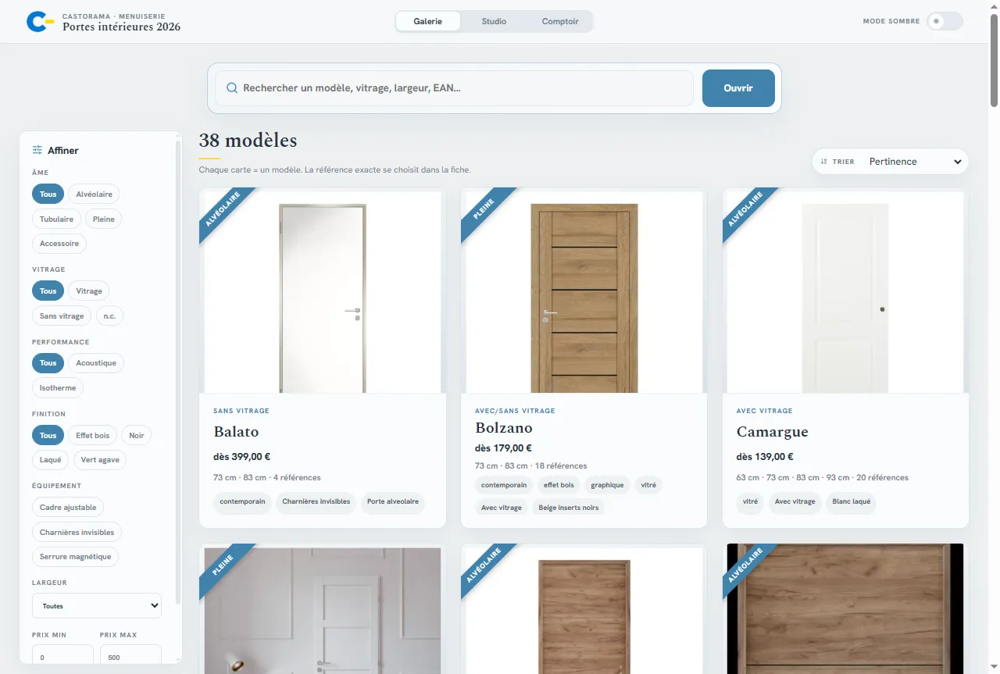
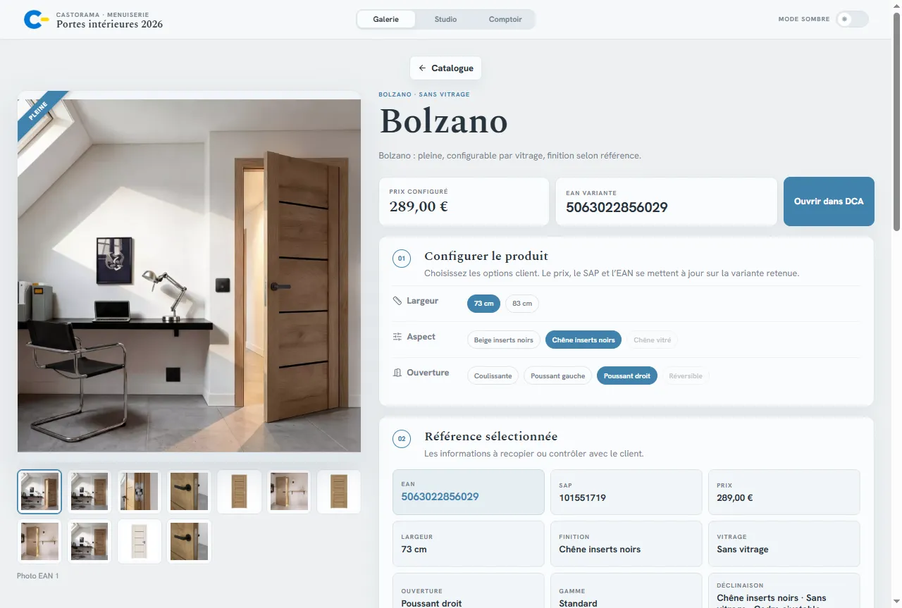
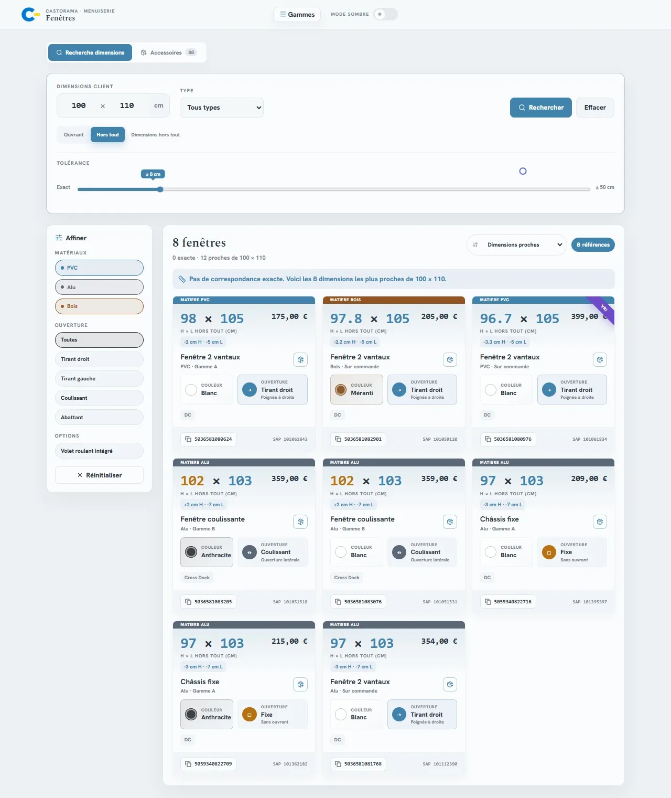
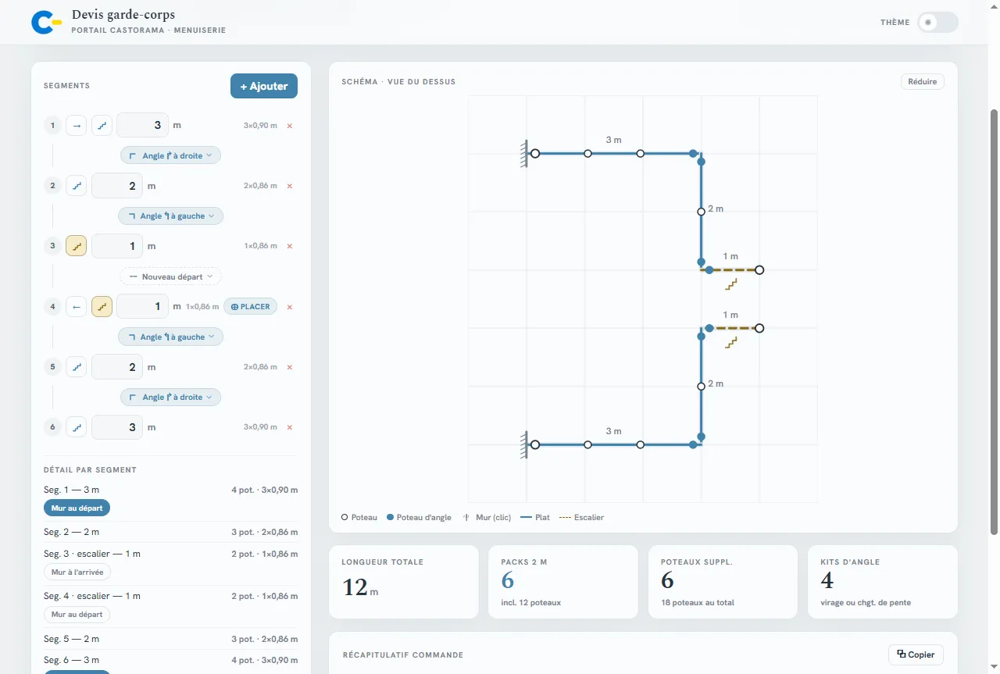
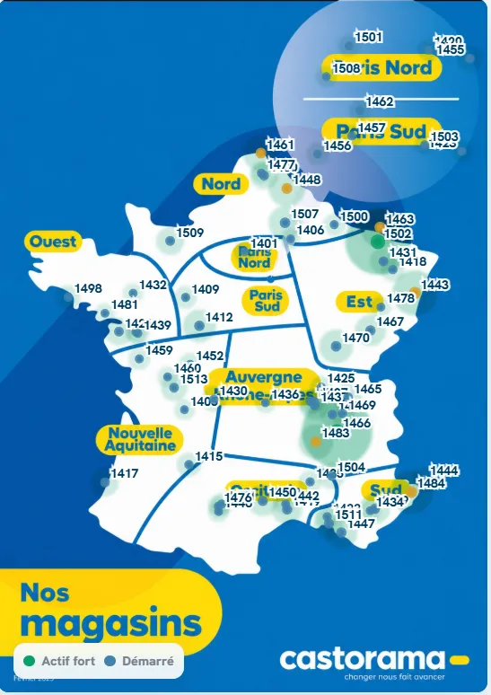
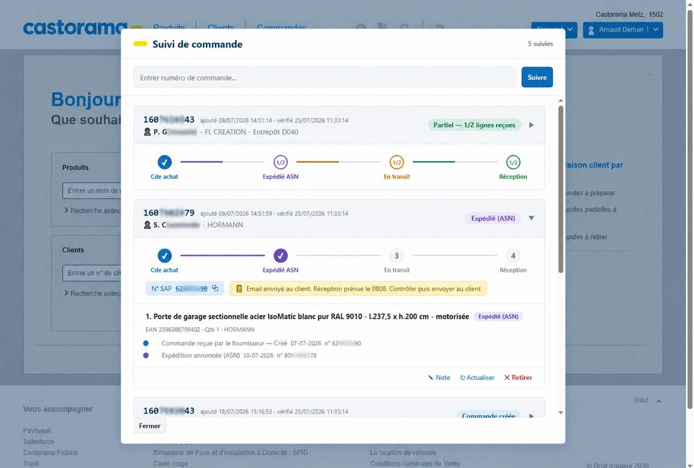

TERRAIN → RÈGLES → OUTIL → USAGE
Construire ce qui manque.
Manager d’un rayon menuiserie chez Castorama, je conçois depuis le terrain les outils qui manquent : compris dans l’usage, construits sans budget IT, adoptés sans plan de déploiement.
10 min → 5 s
pour une opération de devis & transport
20 → 100 %
du catalogue fenêtres accessible instantanément à partir des dimensions du client
~60 K€/an
d’activité sur-mesure reconstruite depuis une année de quasi-abandon
LA PREUVE PRINCIPALE
Un portail vendeur, trois logiques de vente
Des catalogues de menuiserie complexes rendus directement actionnables pendant la vente. Chaque gamme garde sa logique : exploration visuelle pour les portes, recherche dimensionnelle pour les fenêtres, composition pour les garde-corps.
casto-portes.netlify.app

Portail multi-gamme, en production — concept actuellement étudié pour une industrialisation chez Castorama.

Portes intérieures
572 références auditées, explorables par visuels et filtres progressifs, jusqu’à l’EAN et au lien de commande.

Fenêtres
Recherche par dimensions client, tolérances progressives et critères croisés utiles à la vente.

Garde-corps
Des mesures terrain à un projet chiffré : schéma, poteaux, kits et récapitulatif de commande.

ADOPTION
Diffusé de vendeur à vendeur
Aucun relais siège, aucune communication officielle : le portail s’est diffusé directement entre vendeurs.
73 / 94
magasins Castorama ont ouvert le portail
78 % du parc France
635navigateurs distincts
3 014connexions
1 606recherches
1 700EAN copiés pour commander
Du 30 juin au 29 juillet 2026 · mise à jour quotidienne.
LE SOCLE
Quatre ans à transformer les irritants du terrain en outils utilisés
Avant le portail, des outils internes en usage et d’autres prototypes fonctionnels :
—suivi des devis, commandes spéciales et projets, avec relances ;
—devis & transport pré-remplis par API internes : 10 min → 5 s ;
—prototype rendant visibles et filtrables les références provisionnées dans DCA ;
—Track & Trace logistique, injecté dans l’application vendeur.
Voir le cas Castorama complet →

Prototype fonctionnel Track & Trace — suivi logistique injecté dans l’application vendeur.
SECOND TERRAIN
Un système de pilotage multi-agent
Utilisé quotidiennement depuis Telegram : six domaines spécialisés, mémoire structurée, travaux planifiés et validation par l’usage réel. Même pratique, appliquée à la continuité.
Lire l’annexe conception →
MÉTHODE
DiagnosticComprendre pourquoi un process ne tient pas dans le réel.
RacineTraiter la friction racine, pas le symptôme.
ConceptionUne solution praticable avec les moyens disponibles.
RobustesseFaire tenir l’outil dans l’usage, malgré turnover et faible support.